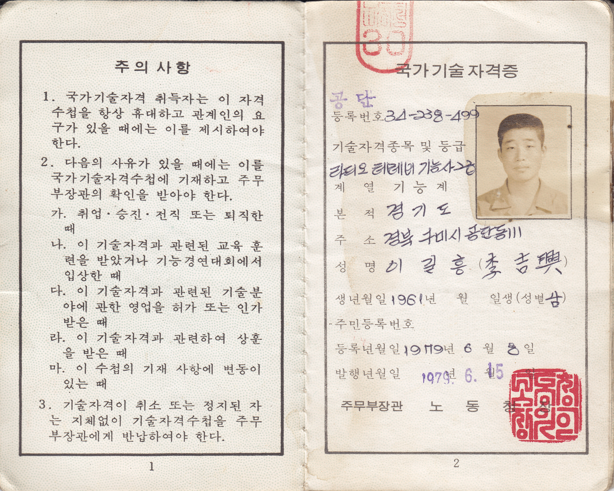

자격증에 대하여

<자격증에 대하여>
중학교를 우수한 성적으로 졸업하고, 1977년 금오공고를 입학하여 전국에서 모인 친구들과 한 호실에서 만났다. 나는 정성, 정밀, 정직 3개 기숙사동중에서 정직동 1층 마지막호실에 자리를 받았다. 이 친구들은 얼마나 대단할까~ 고향의 자존심을 지키려 애썻다는 친구도 있었다. 1학년 6개월 동안은 다양한 전공 체험을 한다. 기계과에서 줄 다듬질로부터 시작하여 선반, 밀링, 연삭 등을 배웠다. 원통형 쇳덩이를 잘라 하나씩 받고, 오래되어 다 마모된 줄을 하나씩 주고 사각형으로 만들라는데, 아무리 밀어도 쇠가 잘 깍이지를 않는다. 약은 친구들은 밤에 선배들에게 선반으로 네모나게 깍아 달라고 한 다음, 낮에는 미는 시늉을 하다가 제출하기도 했다. 판금과에서 양철판으로 쓰레받기 만들기, 가스용접, 전기 용접, 쇠 달금질 등을 실습했다. 쓰레받기는 재미나고 즐겁게 만들었으며 쓸모가 있었고, 용접은 처음 해보는 것이라 두려웠지만, 안전모를 받치고 조금은 데어가면서 그런대로 잘 해냈다. 가스 용접은 용접 부위를 잘 달군 다음에 용접봉과 함께 붙여야 하고, 전기 용접은 한번 내리쳐서 반발력으로 살짝 떳을 때, 그 정도 거리를 잘 유지하면서 매끈하게 용접을 해 나가는게 관건이다. 금속과에서는 목공, 금형, 주조 등을 실습했다. 금속과 선배들이 졸업 후에 잘 나간다는 것이 그들의 장점이라고 홍보했다. 한 선배가 쇳물을 부우면서 쇳물에 세수 한번 해 보겠나고 했던 말이 지금도 기억에 남는다. 전자과에서는 전기 배선, 코일로 변압기 만들기, 전기 모터, 납땜 등을 해 본 것 같은데, 3상 모터를 돌릴 때의 그 소리는 한마디로 공포 그 자체였다. 한 학기 동안 모든 과의 실습을 마친 후에 1지망 기계과를 지원했는데 2지망 전자과로 배치되었다. 내 성적이 높았던 것 같은데, 어찌된 결과인지 지금까지도 의아한데, 아마도 적성 검사에서 전자 분야로 나왔기 때문인 것 같았다. 이걸 감사하다고 해야 하나 운명이라고 해야 하나, 어쨌든 지금도 나는 거기에 대해 불만이 없다. 그저 감사할 따름이다.
전자과에서의 배움은 대부분 촌놈인 우리에게는 모든 것이 신세계의 경험이다. 기판위에 깜박이 만들기로부터 텔레비전 해부 및 진공관 구경, 통신 실습, 전자계산기 실습, 엘리베이터 제어 등 다양한 전자 실습이 이어진다. 수업의 대부분은 전공 수업이고, 수업의 반 이상은 실습이다. 국영수는 일주일에 한두 시간~ 생물, 지학, 세계사, 음악, 미술 같은 수업은 없다. 수학 선생님이 음악 미술 시간도 없는 우리가 불쌍하다며 수학 시간에 노래를 하나 가르쳐주신 기억이 난다. 다른 수업에서 노래를 배운 기억이 하나 더 있다. 바로 일본이 시간에서이다. 일본에서 사람들이 방문한다고 하며, 그들 방문에 맞춰 일본어 노래를 하나 가르쳐 주시었다. 그리고 마침내 일본 사람들이 수업 견학을 할 때 우리는 수업에서 일본어로 노래를 불렀다. 일본의 원조로 설립한 학교에서 일본 사람들이 견학을 하며 이런 광경을 보고 흐믓해 했을 것이다. 더불어 감동해서 기부도 했을 수 있다. 그저 감사할 따름이다. 이것과는 상관없지만 언젠가 전교생에게 골덴 바지 하나씩을 배부했는데, 이 바지는 관세청에서 압수한 물건이라고 하였다. 이때의 골덴 바지는 참 품질이 우수하여, 그동안 우리가 입던 옷보다도 훨씬 좋았다. 그 바지를 입으면서 무척 행복했던 기억이 있다.
실습장에서 실습할 때도 많은 사람들이 관람을 하고 다녀갔다. 어떤 단체가 온다고 하면, 우리는 제일 먼저 학교, 교실, 실습장 등을 깔끔히 청소하고 나서 실습을 했다. 이런 과정이 너무 자주 반복되어, 나중에는 누가 온다고 하면 귀찮고, 약간 짜증도 나고, 모든 것이 불편했다. 3학년때인가 학급지를 만들고 시, 산문, 소설 등을 모집할 때, 나는 시 한편과 ‘금오 동물원’이라는 단편 소설을 냈는데, 시는 실렸지만 단편 소설은 내용이 불순하다며 선생님이 커트하여 실리지는 못했다.
전자과에서의 실습은 어렵지 않았다. 저항에 띠처럼 둘러싼 ‘흑갈적등황녹청자회백금은모‘ 색을 통해 저항값을 알아내기, 저항과 콘덴서, 다이오드, 트랜지스터, 트랜스, 스위치 등으로 기판위에 배선을 하고 땜납으로 납땜해서 회로 완성하기, 테스트, 검사 등의 실습이 이어진다. 가끔 배선 잘못으로 동작이 안되면 다시 배선을 바꿔 땜하고 테스트하기도 한다. 이때는 주로 트랜지스터를 통해 대부분의 회로를 구성하였다. 나중에 IC칩이 등장하는데, 우리는 아직 이런 집적회로 실습을 본격적으로 하지는 못했다. 경험이 없는 관계로 나중에 IC 칩을 실기로 하는 기사 시험에서 이론은 붙었지만, 실기에서 떨어지기도 하였다.
낮에는 수업과 실습, 저녁에는 자습, 취침시간 이후에는 도서관에서 공부도 하고, 도서관 책을 읽기도 하였다. 그때 읽은 책들은 우주 천체에 관한 책, 심리학에 대한 책 등 대부분 과학에 대한 책들이었다. 어릴때의 꿈은 아인슈타인과 같은 과학자가 되는 게 꿈이어서 그런 쪽으로 관심이 있던 것 같았다. 우주의 광대함과 자연의 섭리, 꿈에 대한 해석, 인간의 심리 같은 쪽에 대한 갈증이 있었다. 우주의 끝은 어디일까~ 우주의 끝은 있는 걸까~ 원자의 구조와 태양계의 구조가 비슷한데, 미시의 세계와 거시의 세계는 같은 모양일까~ 꿈은 어떤 현상일까~ 과거 어떤 사람은 머리맡에 공책을 두고, 일어나자마자 잊어버리기 전에 꿈 내용을 적는 사람이 있었다고 한다. 나는 꿈을 녹화하는 기계를 만들고 싶어하는 마음이 그때부터 시작하여 지금까지도 있다. 지금의 내 능력으로는 부족하여, 미국에서 인공지능 박사과정을 하는 내 둘째 딸에게 좀 더 연구해서 그 기계를 만들어 보라고 최근에 말하였다.
당시 고민했던 문제 하나가, 아주 옛날 하늘의 별 등급을 정하였다는 내용이 있었는데, 이 문제를 어떻게 해결했는지가 몹시 궁금하였다. 역사적으로는 기원전 135년경 히파르코스가 별을 밝기에 따라 1등급에서 6등급으로 분류한 것이 그 시초로 알려져 있다. 하늘에서 가장 밝은 별을 1등급, 맨눈으로 간신히 보이는 별을 6등급으로 정하였다고 한다. 1등급은 6등급보다 100배 밝고, 1등급의 차이는 2.5배라고 한다. 밤에 별을 보면서 그 차이가 미세한데, 어떻게 그 옛날 1등급에서 6등급까지 구분을 하였을까~ 하는 문제로 고민을 한 것이다. 학교에서 기숙사 반에서는 호실을 위해 야간에 1명씩의 불침번이 교대로 있고, 학교의 야간 경비를 위해 1-2주에 한번 정도 선후배 한명씩 2명이 1조로 같이 움직였다. 2시간 교대의 야간 근무는 학교 및 실습실, 공장 순찰을 도는 게 일이었는데, 밤 하늘의 별을 보면서 이 문제를 곰곰이 생각하다가 나름대로 결론을 내렸다. 그것은 바로 주변 밝기에 따른 변화를 이용하지 않았을까 한 것이다. 즉, 해기 진 이후 바로 보이는 것은 1등급, 좀 더 어두워져서 보이는 것들이 2등급, 아주 깜깜한 밤에만 겨우 보이는 것들이 6등급~ 이렇게 정하는 것이다. 정답은 아니겠지만, 내가 한다면 이렇게 할 수 있겠다라는 결론을 내고 그 문제를 끝냈다.
밤에 도서관에서 공부도 하고, 책을 읽었다고 하지만, 실상은 낮에 수업과 실습, 군사 훈련, 학교에서의 작업 등으로 피곤이 쌓여 졸기가 일쑤였다. 폼은 공부한답시고 취침시간 이후에 도서관에 갔지만, 사실 졸다가 온 날이 대부분이다. 이는 수업에도 영향을 주었다. 하루는 실습 수업에서 시험이 있는 날이었다. 나는 문제를 다 풀고 더 할 일도 없고 졸음도 오고 해서, 시험지를 벼게 삼아 실습실 테이블에 업드렸는데 그만 잠이 들어버렸다. 나중에 실습 선생님이 시험보다 자는 놈은 처음 본다고 깨웠고, 30명 실습반 친구들이 한바탕 웃은 적이 있다. 비오는 날에는 도서관에 잘 가지를 않았는데, 어느 친구가 도서관에 가는 길에 기숙사와 식당 사이에 금오동산 밑을 지나는데 밤에 귀신 소리가 난다는 것이다. 특히 비오는 날에는 더욱 기괴하고 오싹한 기분이 든다고 했다. 나중에 들은 이야기는 종교를 믿는 친구들이 밤에 종교적 체험으로 회개하면서 지르는 소리였다는 후문이 있었다.
당시에는 여름에 에어콘도 없고, 선풍기도 많지 않아 무척 더웠다. 전자과 애들 중에 누군가가 트랜스로 전기를 낮추고 소형 모터로 날개를 달아 선풍기를 만들어 돌리는 것이었다. 지금의 USB 핸디 선풍기 정도였는데, 바람은 션찮았지만 나름 재미가 있었다. 학교 담장 사이로 재활용 쓰레기장이 있는데, 거기서 줏어온 것이라 하였다. 나도 다른 친구들과 함께 몇 번 담장을 넘어 소형 모터랑 몇 가지를 주어와 비슷하게 만들어 보기도 하였다. 그 때 만든 것 중의 하나가 무대에서의 깜박이 조명이었다. 나는 다이리스터를 조합해서 다양한 색갈의 전구들이 깜박이는 회로를 만들고, 이를 시골 동네 친구들과 술 먹고 음악 틀고 춤출 때 사용하였다. 220V의 전원에 연결하여 직접 만든 회로를 통해 빨강, 파랑, 초록 등의 전구를 깜박이며 고향에서의 방학을 보냈다.
1학년때는 잘 몰랐는데, 2학년 때는 3학년의 밥이었다. 틈만 나면 단체로 운동장에 불려 나가 3학년 선배로부터 단체로 혼나고 엎드려 뻩쳐, 비오는날 먼지가 날 정도로 운동장 구르기 등의 시달림을 받았다. 운동장에서 단체로 기합 받을때마다 듣던 얘기, “5기는 오작이야~” 저녁 자습시간에는 학년 연대장 선배가 돌면서 꼬두리를 잡아 단체 기합을 일삼있다. 특히 그 연대장은 곡괭이 자루를 들고 다니면서 업드려 뼡쳐 놓고 곡괭이 자루로 엉덩이를 내리쳤다. 가끔은 일반 3학년 선배들도 그랬는데, 우리가 3학년이 되니 정도는 약하지만 비슷하게 따라 한 경우도 있었다. 마치 전통인 것처럼~
3학년은 기숙사 생활에 거침이 없었다. 가끔 담을 넘어 외출을 하거나, 술을 먹고 들어오기도 하였다. 여름 방학 군대에서 훈련받으며 받았던 담배, 화랑~ 그것을 끝나고 나서 학교로 가져와 피우는 친구도 있었다. 그런데, 성냥, 라이타가 없었다. 그때 한 친구가 전자 엔지니어의 무모함을 드러내어, 롱노즈로 저항을 하나 벽의 전원 탭에 꽃아 넣으니 불꽃이 펑 튀면서 불이 나자, 그것으로 담뱃불을 붙이기도 하였다. 그러다 큰 일나면 어떡하냐고 했는데, 그 친구는 괜찮다고 몇 번을 더 그리 한 거 같다.
3학년이 되면서 전공 실습을 중점적으로 하였다. 전자과는 전자기기, 무선통신, 자동제어 등 3가지의 세부 전공이 있는데, 이는 군에서 필요한 분야로 한 것이었다. 나는 무선통신 전공이었다. 그 때, 무선통신 선생님 중의 한 분이 우리들 실습을 시키고, 창가 앞에서 혼자말로 막 욕을 해 대었다. “개 새끼들~ 좋다고 해서 왔는데, 이게 뭐야~ 대학도 아니고, 전문대도 아니고, 어쩌고 저쩌고~” 그 말은 들은 우리는 우리가 너무 죄송스러웠다. 엄청 대단하신 분 같은데, 여기 후미진 고등학교에 와서 꿈을 펼치지 못하시는구나~ 나중에 그분은 대학에서 조우하게 된다. 내가 처음 대학에 임용되어 학교에 갔을 때, 그 분이 그 곳 학교에서 교수님으로 계셨다. 거기에는 그 분 말고 한 분이 더 계셨다. 그 다른 한 분은 금오공고 학교 창설 때부터 미리 부임하여 선생님으로 학교의 기초를 닦는 등 많은 일을 하시고, 이 곳 학교 교수님으로 이적하여 오신 것이다. 그 분이 먼저 이 대학에 오시고 나서, 무선통신 선생님을 이쪽으로 소개하여 교수님으로 오게 하였다고 한다. 두 분 다 지금은 퇴임을 하셨다. 한 분은 고인이 되셨고, 한 분은 가끔 식사를 같이하면서 그 간의 쌓인 정을 나눈다. 모두 다 고마운 선생님이셨고, 훌륭하신 교수님이셨다. 한 가지 더 반가운 소식은 최근에 5기 동기의 아들이 우리 학교 교수로 온 것이다. 그 친구도 다른 학교의 교수님이신데, 이대에 걸쳐 훌륭하신 교수님이 되고, 또 그 학교가 우리 학교라는 사실에 참으로 기쁘고 축하할 일이 아닐 수 없다.
이 학교에 왔을 때는 그분들 교수님 말고도 동문 후배들이 직원으로 한 명, 학생들로 몇 명이 있었다. 학기에 몇 번씩 후배들과 저녁먹고 술 한잔 하며 시간을 보냈다. 동문 졸업생들도 찾아와서 같이 만났다. 재학생들은 낮에는 직장에서 일을 하고, 밤에 학교에 와서 수업을 들었다. 고맙게도 그 후배들이 찾아 주어 같이 즐거운 시간을 보냈다. 지금은 학교에 그 후배들이 없지만 가끔은 연락을 한다. 직원이던 후배는 공부를 계속하여 대학교 교수님으로 갔다. 다른 두 명의 후배는 박사 학위를 취득하여 각각 회사 근무와 학교 강의를 병행하고 있다. 그리고 더 뜻깊은 일은, 내 지도하의 1호 박사가 금오 동문 후배라는 사실이다. 그 후배는 직장 생활을 하면서 어렵게 공부를 잘 마치고, 기술사에 몇 번 도전하여 자격증도 따고, 지금 열심히 직장 생활을 하고 있다. 내 조카도, 그 조카 사위도 이 학교를 졸업하고, 지금 둘 다 모두 고액 연봉의 길을 걷고 있다고 한다. 모두 감사한 일이다.
2학년 말인가 모든 학생들은 자격증 시험을 치른다. 우리 학교 학생들은 전국에서 모인 수재들이라 대부분은 금방 1차로 붙는데, 일부 극소수의 애들은 떨어진다고 한다. 누가 떨어졌다고 하면, 애들은 킥킥대면서 어떻게 떨어질수가 있냐고 하면서 웃고 그랬다. 떨어지면 다시 보고 대부분 다 붙는데, 졸업할 때까지 안되는 애가 간혹 있다고 한다. 누군지 빨리 고백하시오~ 자수해서 광명 찾으라~ 하하. 나는 R/TV수리 기능사 2급 시험을 치렀다. 통신전공 학생 대부분은 이 기능사 시험을 치렀다. 이론은 당연히 붙고, 2차 실시 시험을 치르러 아마 대구인지~ 구미인지 다른 곳의 학교로 가서 실습시험을 치렀는데, 그 방의 대부분 시험자는 우리반 애들이었다. 실기 문제는 라디오 키트를 조립하는 문제였다. 조립안된 부품 키트를 받고, 일부가 생략된 회로도도 같이 받았다. 생략된 회로를 완성하고 키트에 부품을 꽃고 납땜을 하면서 조립을 하였다. 드디어 조립 완성~ 이제 소리가 잘 나는지 전원을 연결하고 라디오 볼륨과 주파수를 돌려도 소리는커녕 아무 반응이 없다. 이럴수가~ 다른 애들은 어떤가~ 그애들도 마친가지이다. 그 안에는 전국기능경기대회에서 메달은 수상한 특수기능반 친구도 있었는데, 그 친구는? 아, 그 친구도 안되네~ 정상 동작을 하는 것은 하나도 없었다. 우리 모두 웅성거렸다. 뭔가 잘못되었다. 실기시험 감독 선생님께 문제 있는거 아니냐고 물었다. 감독 선생님은 회로도와 키트를 살피더니, 문제가 있어 보인다고 하였다. 그러면서 테스트 신호를 키트내의 앰프 입력단에 대니 뿌~ 하는 소리가 스피커로 나오는 것이다. 다른 친구 것은 어떤가~ 그 친구 것도 앰프는 잘 동작을 하였다. 실기 감독 선생님은 일단 제출하면 앰프 동작 여부를 살펴서 합격 여부를 판단하겠다고 하여 우리 모두는 앰프 체크만 하고나서 제출하였다. 나중에 라디오텔레비기능사 2급 합격 통지를 받았고, 사진을 제출하여 3학년 6월경에 자격증 수첩을 받았다. 졸업할때까지 시간이 있으므로 다른 자격증 시험을 봐서 추가로 딸 수도 있다고 하는데, 특별히 그러지는 않았다. 라디오텔레비 기능사는 1983년 ‘음향영상기기기능사’로 명칭이 변경되었고, 1991년 ‘전자기기기능사 2급’으로 통합된 뒤, 1999년 ‘전자기기기능사’로 개편되었고, 2024년 전자기능사로 명칭이 변경되었다.
1980년 공군에 입대하여 통신 병과를 받아 무선통신장비 정비및운용하사관으로 근무하면서 자격증을 상향화하고 싶은 마음에 전기기기 기사 2급에 도전을 하게 된다. 국가기술자격증은 숙련도와 응시 자격에 따라 크게 기능계열(기능사, 기능장)과 기술계열(기사, 기술사)로 나뉜다. 기능계열은 실무 숙련도를, 기사계열은 공학적 기술 이론과 실무 능력을 종합적으로 평가한다. 공고생들은 기능사 2급을 따고, 경력을 갖추고 1급 기능사를 볼 수 있다. 전문대학원생은 기사 2급을, 4년제 대학생들은 기사 1급을 볼 수 있었다. 기능계열의 최고점은 기능장이고, 기사계열의 최고는 기술사이다. 나는 기술사쪽으로 방향을 정하겠다고 생각해서 기능사 자격증에 경력을 더해 기사 시험을 치른 것이다. 이론은 쉽게 붙었는데, 문제는 실기였다. IC칩으로 회로를 구성하는 문제를 풀어야 하는데, 경험이 없었다. 지금 같으면 학원을 다니면 되는데, 당시 군 복부중이라 환경이 안되었다. 그냥 대충 고등학교 때 실습한 경험으로 때우려고 실기 시험장에 갔는데, 동작이 안된다. 결과는 낙방~ 시험은 떨어졌는데 문제는 실기 시험을 보러 대구에 갔을 때, 시내에서 전화하다가 수첩을 공중전화 박스에 두고 귀대를 한 것이었다. 지갑 안에는 카드랑 신분증이랑 있는데, 문제가 난감했다. 며칠 끙끙댔는데, 부대로 연락이 왔다. 대구의 모 여성이 수첩을 주워서 수첩안의 연락처를 따라 부대로 전화를 한 것이었다. 나는 너무도 감사하여 바로 주말에 외출을 신청해서 잃어버린 수첩을 받으러 갔다. 20대의 대구 사투리를 쓰는 젊은 여성이었는데, 나보다는 몇 살 위로 보였다. 전화하다가 수첩을 발견했고, 내용을 보니 군에 관련된 수첩이라 누가 가져가기 전에 안전하게 자신이 가져가 연락을 한 것이라 하였다. 나는 고마워서 맛있는 저녁을 대접하고 차를 마시고 감사를 전하고 수첩을 받아 귀대하였다. 당시 군 업무로 바쁘고 해서 그런지 기사 시험을 다시 치르지는 않았다.
대학에서의 전공은 전자이다. 고등학교에서는 전자과, 대학에서는 전자공학과이다. 입학원서를 낼 때, 전자계산학과에 잘못 줄을 섰다가, 나중에 이를 알고 줄을 바꿔 전자과에 지원을 했다. 당시 전자계산학과는 신생학과였고 전자과는 인기 절정의 학과였다. 전자계산학과는 나중에 컴퓨터공학과로 이름이 변경되고 지금은 인기 절정의 학과이다. 헌데 지금은 전자과가 아닌 컴퓨터공학과에서 학생들을 가르치니 이 또한 아이러니가 아닐 수 없다. 대학에서도 자격증에 대한 찬반이 있었다. 보통 대학에서는 4학년이 되면 기사 1급을 본다. 일부는 자격증이 있으면 좋다고 하고, 일부는 전공 학사학위가 있으면 자격증은 필요 없다고 한다. 그때 내가 있던 학교의 학생 대부분은 자격증 시험을 따로 치르지는 않았다. 극히 일부는 시험에서의 가산점, 회사에서의 수당 등이 있을 수 있다며 본 친구도 있었지만 소수에 불과했다.
나중에 나와 같은 대학에 들어온 한 5기 동기생 친구는 기계계열 학과에 당당히 합격하여 같은 캠퍼스에서 학창 시절을 보냈다. 그 친구는 대학 졸업전에 열심히 공부해서 변리사 시험에 합격하였다. 변리사는 변호사, 세무사 등과 함께 모두가 부러워하는 자격시험으로 새로운 기술, 발명, 디자인, 상표 등 인간의 지적 창작물에 대한 권리(지식재산권)를 취득하고 보호하기 위해 법률 및 기술적 상담, 출원, 소송을 대리하는 최고 권위의 이공계 전문직이다. 평균 연봉이 전문직 중에서도 최상위권에 속하지만, 자격시험의 난이도가 극악에 가까워 국가 전문 자격시험 중 가장 고난도 시험으로 꼽힌다고 할 수 있다. 그 친구는 대학시절 중에 결혼을 해서, 집안 살림 살피랴, 얘기 보랴, 공부하랴~ 많은 어려움을 극복하고 시험에 합격하여 공무원에 들어가서 높은 위치까지 올라간 아주 존경스러운 친구이다.
기술사는 대한민국 국가기술자격 제도에서 기능사, 산업기사, 기사를 거쳐 도달할 수 있는 가장 높은 등급의 최고 권위 자격이다. 기능장은 현장 실무와 작업 관리의 최정점에 선 '최고의 장인'이고, 기술사는 공학적 이론을 바탕으로 기획·설계·감리를 총괄하는 '최고의 엔지니어'이다. 두 자격증 모두 대한민국 국가기술자격의 최상위 등급(박사급 대우)이지만, 지향하는 역할과 시험 방식에서 뚜렷한 차이가 있다. 해당 분야에 관한 고도의 전문지식과 실무 경험을 바탕으로 계획, 연구, 설계, 분석, 시험, 운영, 평가, 감리 등의 기술 업무를 수행한다. 학교에 있으면서 외부 회사와 함께 정부 사업을 수행하곤 하는데, 현재 기능장 자격을 취득하여 사업을 하는 고등학교 후배가 있다. 한마디로 박학다식하고 만능을 가진 멋진 후배님이라 할 수 있겠다. 대학원에서 같이 공부를 하던 다른 한 친구는 업무 재직 중 열심히 공부를 해서 기술사 자격증을 따고, 퇴임 후 기술 자문 등의 일을 열심히 하고 있다. 모두 어려운 자격증을 따고 이를 기반으로 열심히 잘 살고 있는 모습이라 할 수 있겠다.
회사에서는 특허와 프로그램 등록이 장려되었다. 내가 근무한 연구소에서의 업무는 새로운 기술을 만드는 것이라기보다는 하드웨어 팀에서 만든 제품이 잘 동작하도록 소프트웨어를 만들어 심는 것이기에 주로 프로그램 등록을 하였다. 특허 및 프로그램 등록이 회사의 경쟁력이라는 구호 아래 여러 프로그램을 등록하였다. 하드웨어를 만드는 부서의 사람들은 특허 쪽으로 많이 출원하였다. 특허를 출원하면 일정의 사례금도 지급하였다. 프로그램을 등록하면서 이게 정말 자산이 될 수 있을까~ 라는 생각을 하며 여러 개를 등록한 기억이 있다.
학교에 근무하면서 몇 개 특허를 출원하는 계기가 있었다. 기계과 교수님이 무인 매장에 필요한 스마트 카트를 설계하였는데, 스마트 장비, 서버 그리고 및 통신 부분을 내가 해 달라고 하여 공동으로 작업해서 관련 특허를 2개 출원하였다. 이 2개의 특허 중 하나는 어느 중견 회사에서 활용하고 싶다고 하여, 특허비를 받고 사용을 허가한 경우가 있었다. 이는 특허 판매 대신 실시권(라이선스) 설정을 통해 사용료(로열티)를 받는 협약으로서, 특허의 소유권을 유지하면서 안정적인 수익을 창출하는 방법이다. 해당 회사가 잘 활용하여 회사도 잘 되었으면 하는 바램이다. 최근에는 금오 동문 후배가 운영하는 회사와 같이, 피부 미용 카메라 제어 관련 정부 과제를 추진하면서, 과제 관련한 내용을 중심으로 특허를 출원하였고, 이 특허는 아직 처리 중에 있다.
학과 교수님 중에서 기술사 자격증을 취득한 교수님이 두 분 있었다. 예전의 여기 교수님들은 직장생활 경험이 많으신 분들이 대부분이다. 직장 생활을 하면서 틈틈이 경험을 살려 공부하고 자격증에 도전을 하였던 것이다. 두 분 모두 홈페이지에 가면 경력 부분에 이 내용이 있었다. 한 분은 시간날 때마다 이 자격증 자랑을 그렇게 했다. 당시에 나는 그 자격증에 대해 별로라고 생각했었는데, 지금 생각해 보면 나름 열심히 노력한 결과였다는 생각이 든다. 박사는 흔하지만 기술사는 인원 비율로 흔하지 않다. 기술사를 가진 다른 교수님은 박사 학위도 2개이다. 컴퓨터공학박사와 경영학박사 학위 등 2개의 학위를 가지신 분이다. 이 분은 항상 도전하는 자세의 삶을 살아 오셨는데, 지금도 퇴직 후에 외국 대학 부총장도 하다가, 다시 국내로 유턴하여 인터넷에서 직업 전문가를 위한 유트브 콘텐츠를 열심히 만들어 배포하고 계시다.
우리 집안은 시골에서 농사짓는 부모님을 두고 있어 생활이 풍족하지 못했다. 할아버님은 땅과 산이 많았는데, 술, 도박 등으로 다 탕진하셨다고 한다. 아버님은 젊었을 때, 서울로 상경하여 직장 생활을 하다가 어머님을 만나 결혼하고 다시 시골로 내려와 농사를 지으셨다. 땅이 없어 남의 논을 빌려 소작하고, 남의 밭을 빌려 고추를 심어 팔고, 비록 국민(초등)학교이지만 남보다 배운 글이 있어 오랫동안 이장을 하며 근근이 생활하였다. 가정이 어렵다보니 중학교까지는 그럭저럭 다녔는데, 고등학교는 보내기가 어려웠다. 나의 형님은 공짜로 가르쳐주고 취업시켜준다는 철도 고등학교에 지원했다가 낙방하여 바로 취업전선에 뛰어 들었다. 나도 국비 장학생 선발을 하는 금오공고에 지원하여 다녔다. 누님은 울고불고 하여 인문계 고등학교에는 보냈다. 아버지가 바로 및 동생도 공고에 보내겠다는 것을 내가 극구 반대하여 인문계 고등학교에 보냈다. 아마도 어머님도 서울 출신이라 학구열이 높아 같이 반대해서 그렇게 되었을 것이다. 형님은 중학교 졸업후부터 바로 취업을 하여 여러 직종을 거치다가 전파사에서 기술을 배워 자격증 없이도 서울에 전파사를 열었다. 라디오, 텔레비전, 전축, 앰프 등 모든 것을 다 고쳤다. 집 전기 배선도 하고, 전등, 형광등도 달았다. 나도 레디오텔레비전 기능사 2급이 있던 터라, 대학 다니면서 가끔 일을 도왔지만, 실제 기술은 형이 더 뛰어났다. 내가 새 집을 샀을 때, 우리집에 와서 배선도 봐주고 등도 달아주고 그랬다. 내 중학교 동창들도 몇 명 공고로 진학하여 졸업 후 전파사를 하는 한 친구가 있었는데, 그 친구 전파사에 가본 적이 있었다. 그때 나랑 같은 전공으로 공부하여 비슷한 기술로 사는 친구가 있는게 무척 신기했었다. 시대가 흐르고 기술이 발전하여 대리점이 번창하고 전파사가 할 일을 잃게 되자 형은 다른 직종으로 바꿔가면서 치열하게 살았다. 그러면서도 틈틈이 공부해서 전기기사 자격증도 따고, 소방 등 재난 안전 관련 기사도 따고 해서, 이를 바탕으로 하는 직업에 안정적으로 정착하여 일을 오래 해오고 있다. 지금도 퇴직 후 계약 상태로 관련 일을 계속한다고 한다.
나는 고등학교 때 라디오텔레비 기능사 2급을 따고, 군에서 전자기기 2급 기사에 도전했으나 취득에 실패하였고, 나중에 대학교에서 학사, 석사, 박사 학위를 취득하였다. 군에 있을 때, 운전면허 1종 보통을 땃고, 외국에 나가 있을 때, 거시서도 운전면허를 취득하였다. 나가기 전에 국제 면허를 받아 나갔는데, 국제면허가 3개월 이내에 만료하는 관계로 그곳 시험을 따로 받아야 운전이 가능했다. 신기한 게, 그곳에서의 이론 시험을 한국어로 봤다는 것이다. 특허도 몇 개 출원하여 보았고, 프로그램 등록도 다수 있었다. 2016년에는 Who’s Who에 등재되기도 했는데, 별 내용은 없는 것이다. 소맥 자격증도 하나 있는데, 그것은 이벤트 행사에서 정말 재미로 받은 것이다. 지금 자격증을 본다면 어떤 것을 볼까~ 자격증을 쓸 데는 없지만 공부하는 셈 치고 한번 본다면~ 문화예술 이벤트 프로듀서? 자격증보다도 노래 연습 열심히 하고, 기회가 되면 야외에서 버스킹도 해 보고, 실력이 향상되면 이름 없는 성악 콩쿠르에 나가서 간신히 입상이라도 할 정도가 되면 좋겠네요~